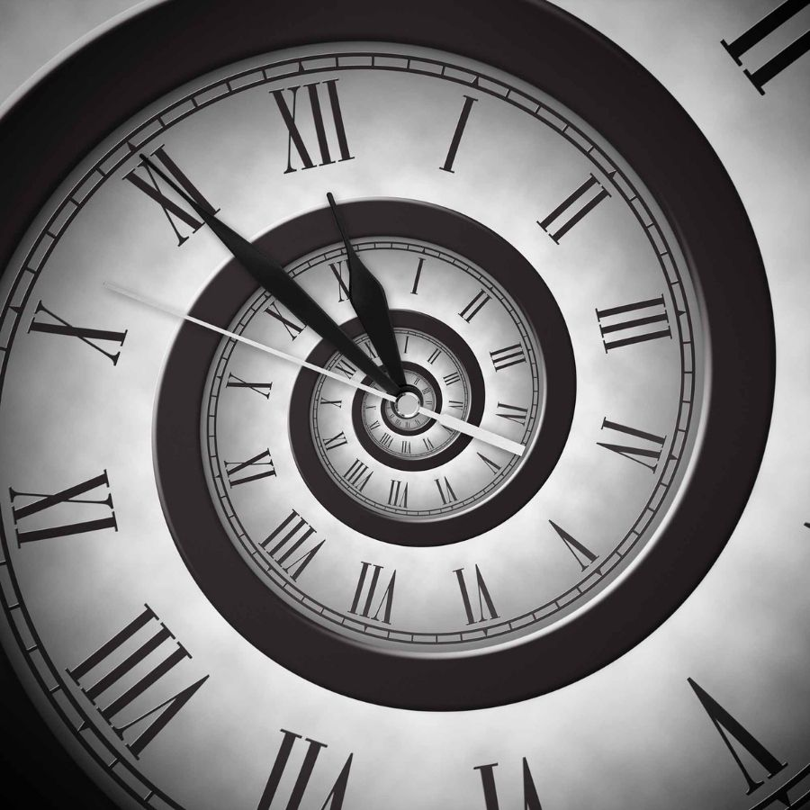

Witaj na stronie Historia i Czas!
Tutaj dowiesz się fascynujących faktów na temat historii zegarów oraz ich różnorodnych mechanizmów i działania.
Przez tą stronę będziesz mógł/a podążyć śladami najważniejszych wydarzeń związanych z zegarami oraz odkrywać fascynujące fakty i ciekawostki.
Niezależnie od tego, czy jesteś pasjonatem zegarów, historykiem, czy po prostu ciekawskim obserwatorem, mam nadzieję, że moja strona dostarczy Ci mnóstwo ciekawej wiedzy i wzbudzi Twoje zainteresowanie tematem czasu i zegarów.
Zapraszam do odkrywania świata czasu i zegarów!
Gdzie zacząć?
Zapoznaj się z naszymi sekcjami tematycznymi: